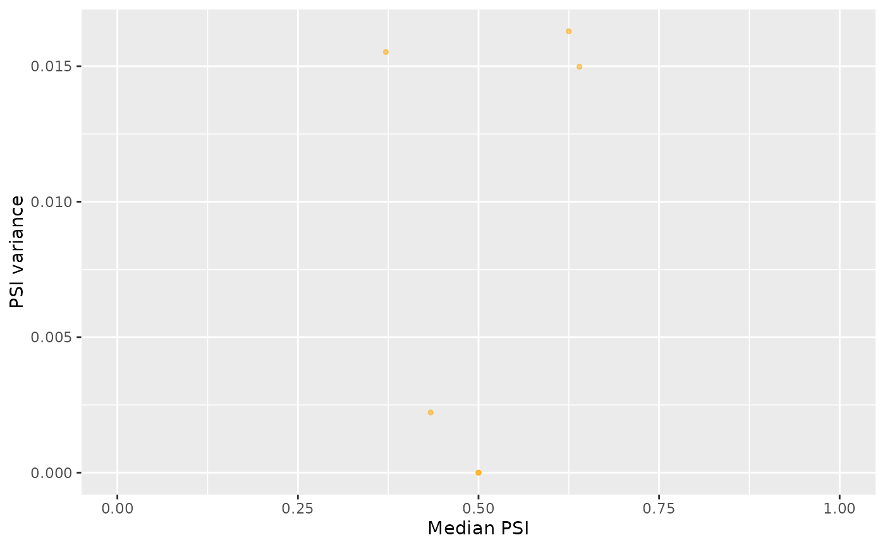
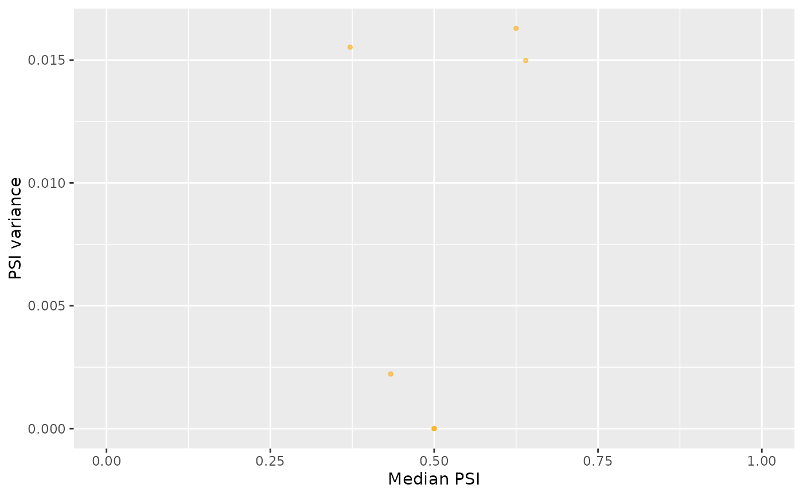

Scatter plot to compare between the row-wise mean, median, variance or range
from a data frame or matrix. Also supports transformations of those
variables, such as log10(mean). If y = NULL, a density plot is
rendered instead.
Usage
plotRowStats(
data,
x,
y = NULL,
subset = NULL,
xmin = NULL,
xmax = NULL,
ymin = NULL,
ymax = NULL,
xlim = NULL,
ylim = NULL,
cache = NULL,
verbose = FALSE,
data2 = NULL,
legend = FALSE,
legendLabels = c("Original", "Highlighted")
)Arguments
- data
Data frame or matrix containing samples per column and, for instance, gene or alternative splicing event per row
- x, y
Character: statistic to calculate and display in the plot per row; choose between
mean,median,varorrange(or transformations of those variables, e.g.log10(var)); ify = NULL, the density ofxwill be plot instead- subset
Boolean or integer:
datapoints to highlight- xmin, xmax, ymin, ymax
Numeric: minimum and maximum X and Y values to draw in the plot
- xlim, ylim
Numeric: X and Y axis range
- cache
List of summary statistics for
datapreviously calculated to avoid repeating calculations (output also returns cache in attribute namedcachewith appropriate data)- verbose
Boolean: print messages of the steps performed
- data2
Same as
dataargument but points indata2are highlighted (unlessdata2 = NULL)- legend
Boolean: show legend?
- legendLabels
Character: legend labels
See also
Other functions for gene expression pre-processing:
convertGeneIdentifiers(),
filterGeneExpr(),
normaliseGeneExpression(),
plotGeneExprPerSample(),
plotLibrarySize()
Other functions for PSI quantification:
filterPSI(),
getSplicingEventTypes(),
listSplicingAnnotations(),
loadAnnotation(),
quantifySplicing()
Examples
library(ggplot2)
# Plotting gene expression data
geneExpr <- readFile("ex_gene_expression.RDS")
plotRowStats(geneExpr, "mean", "var^(1/4)") +
ggtitle("Mean-variance plot") +
labs(y="Square Root of the Standard Deviation")
 # Plotting alternative splicing quantification
annot <- readFile("ex_splicing_annotation.RDS")
junctionQuant <- readFile("ex_junctionQuant.RDS")
psi <- quantifySplicing(annot, junctionQuant, eventType=c("SE", "MXE"))
#> Using 3 of 3 events (100%) whose junctions are present in junction quantification data...
#> | | 0%
|======== | 20%
|================ | 40%
|======================== | 60%
|================================ | 80%
|========================================| 100%
#> Using 3 of 3 events (100%) whose junctions are present in junction quantification data...
#> | | 0%
|======== | 20%
|================ | 40%
|======================== | 60%
|================================ | 80%
|========================================| 100%
medianVar <- plotRowStats(psi, x="median", y="var", xlim=c(0, 1)) +
labs(x="Median PSI", y="PSI variance")
medianVar

rangeVar <- plotRowStats(psi, x="range", y="log10(var)", xlim=c(0, 1)) +
labs(x="PSI range", y="log10(PSI variance)")
rangeVar
# Plotting alternative splicing quantification
annot <- readFile("ex_splicing_annotation.RDS")
junctionQuant <- readFile("ex_junctionQuant.RDS")
psi <- quantifySplicing(annot, junctionQuant, eventType=c("SE", "MXE"))
#> Using 3 of 3 events (100%) whose junctions are present in junction quantification data...
#> | | 0%
|======== | 20%
|================ | 40%
|======================== | 60%
|================================ | 80%
|========================================| 100%
#> Using 3 of 3 events (100%) whose junctions are present in junction quantification data...
#> | | 0%
|======== | 20%
|================ | 40%
|======================== | 60%
|================================ | 80%
|========================================| 100%
medianVar <- plotRowStats(psi, x="median", y="var", xlim=c(0, 1)) +
labs(x="Median PSI", y="PSI variance")
medianVar

rangeVar <- plotRowStats(psi, x="range", y="log10(var)", xlim=c(0, 1)) +
labs(x="PSI range", y="log10(PSI variance)")
rangeVar